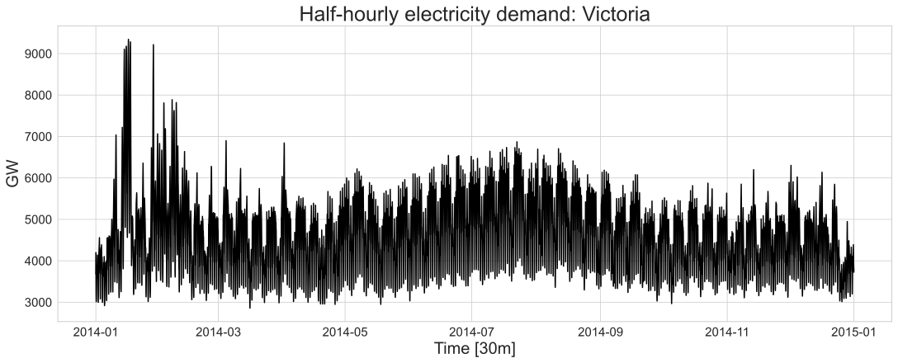
Time series graphics
MATH840 | Time Series
Ihor Miroshnychenko
Kyiv School of Economics
The seasonal period
| Data | Minute | Hour | Day | Week | Year |
|---|---|---|---|---|---|
| Quarters | 4 | ||||
| Months | 12 | ||||
| Weeks | 52 | ||||
| Days | 7 | 365.25 | |||
| Hours | 24 | 168 | 8766 | ||
| Minutes | 60 | 1440 | 10080 | 525960 | |
| Seconds | 60 | 3600 | 86400 | 604800 | 31557600 |
Graphics
Plots allow us to identify:
- Patterns
- Unusual observations
- Changes over time
- Relationships between variables
Time plots
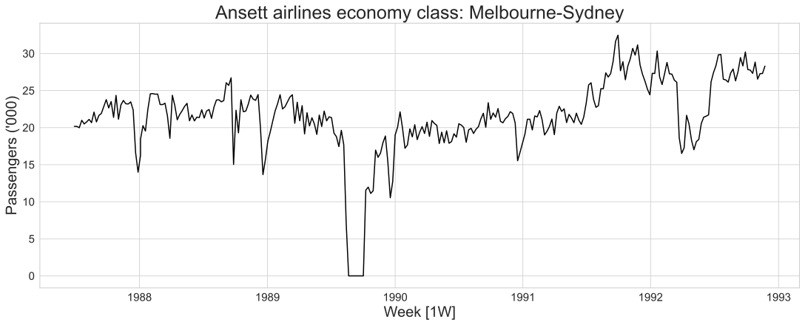Time plots
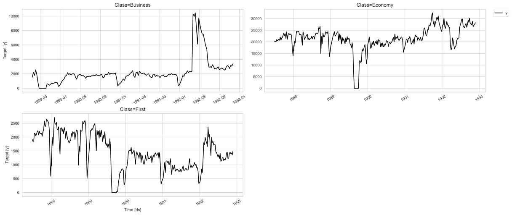Time plots
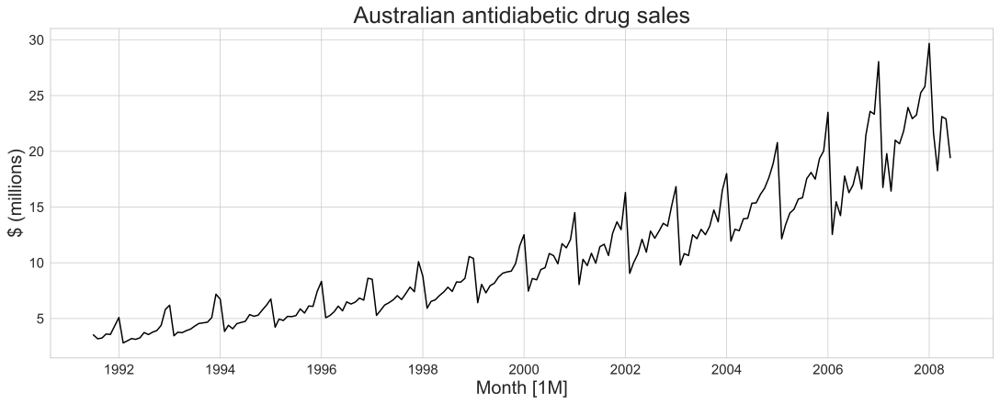Time series patterns
- Trend: Long-term increase or decrease in data (not necessarily linear)
- Seasonal: Regular patterns at fixed, known intervals (yearly, monthly, weekly, daily)
- Cyclic: Rises and falls without fixed frequency, typically lasting 2+ years (often tied to economic conditions)
Time series patterns
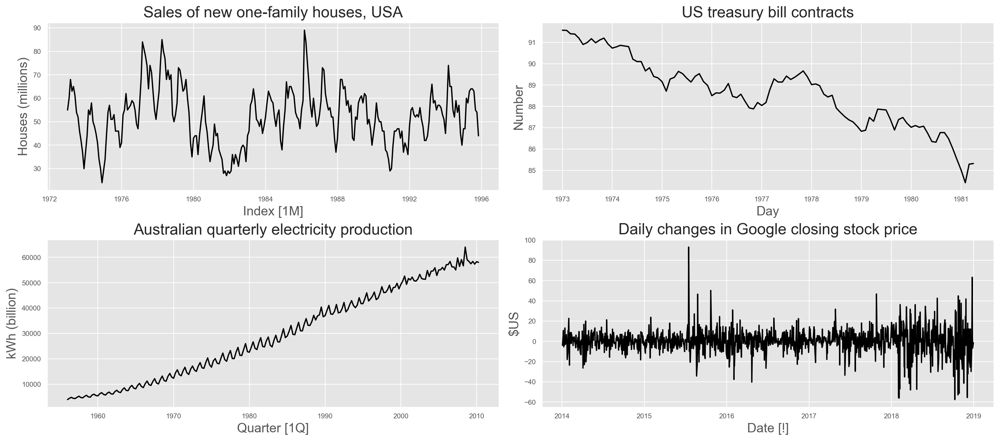Seasonal plots
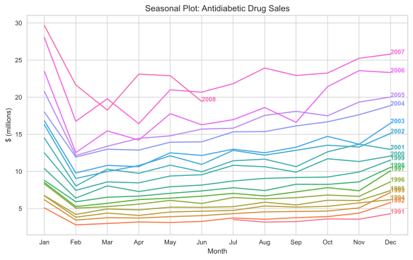Seasonal plots
- Data plotted against time within each seasonal period
- Useful for identifying seasonal patterns and anomalies
- Can be used for multiple seasonal periods
Multiple seasonal periods
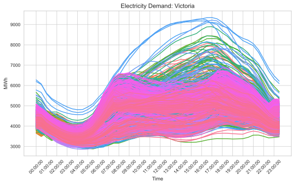Multiple seasonal periods
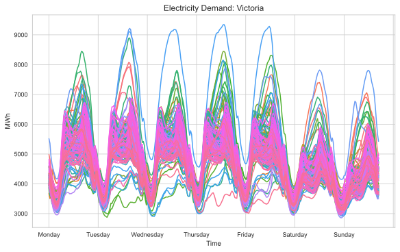Multiple seasonal periods
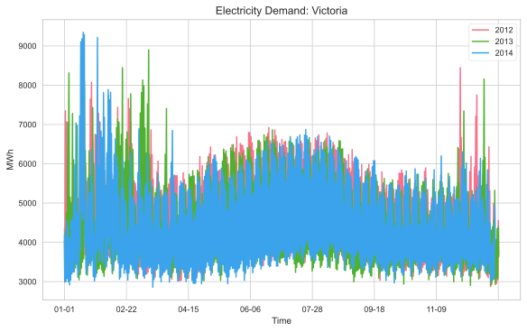Seasonal subseries plots
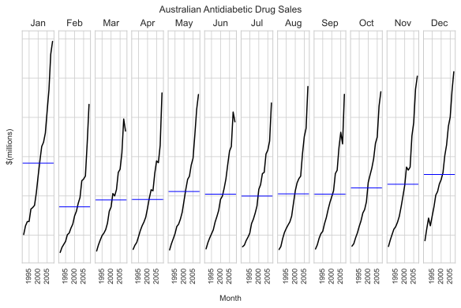Seasonal subseries plots
- Data for each season collected together in time plot as separate time series
- Enables the underlying seasonal pattern to be seen clearly, and changes in seasonality over time to be visualized
Example: Australian holiday tourism
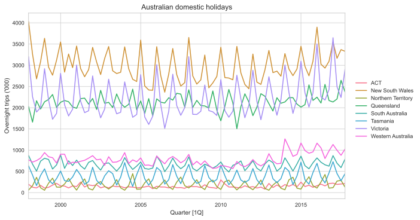Example: Australian holiday tourism
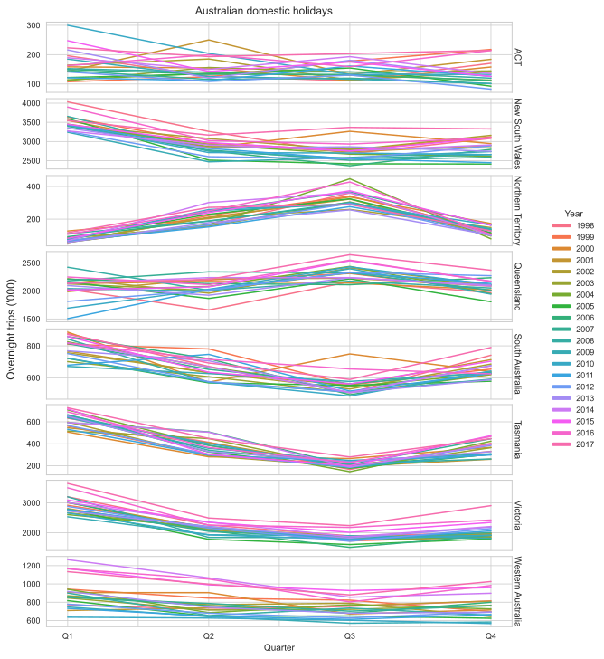Example: Australian holiday tourism
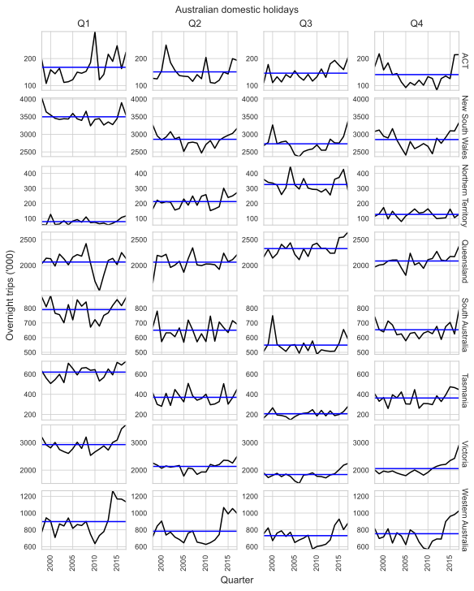Scatterplots
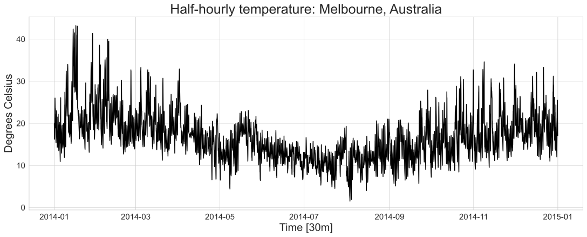
Scatterplots
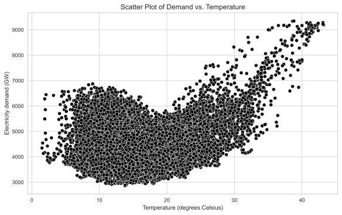Correlation
Measures the extent of linear relationship between two variables.
\[ r=\frac{\sum\left(x_t-\bar{x}\right)\left(y_t-\bar{y}\right)}{\sqrt{\sum\left(x_t-\bar{x}\right)^2} \sqrt{\sum\left(y_t-\bar{y}\right)^2}} \]
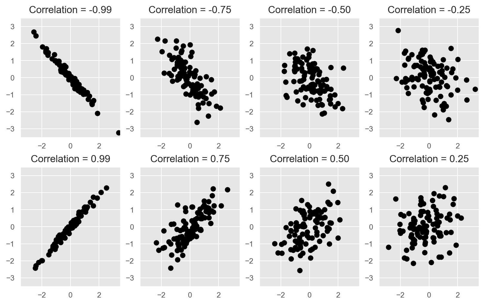Scatterplot matrices
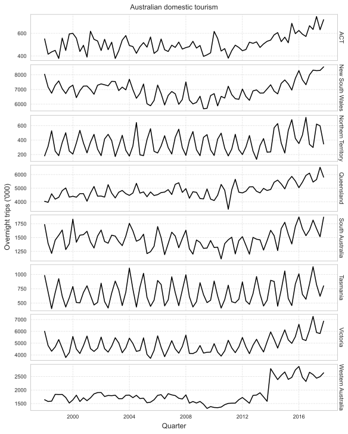Scatterplot matrices

Lag plots
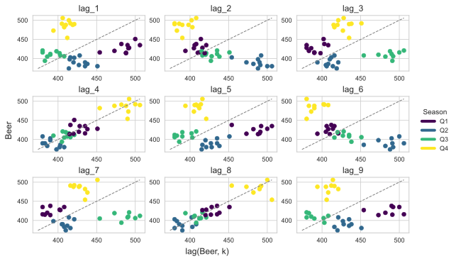
- Each graph shows \(y_t\) against \(y_{t-k}\) for lag (k).
- The autocorrelations are the correlations associated with these lag plots.
- \(r_1\) = correlation between \(y_t\) and \(y_{t-1}\).
- \(r_2\) = correlation between \(y_t\) and \(y_{t-2}\).
- And so on…
Autocorrelation
\[ r_k=\frac{\sum_{t=k+1}^T\left(y_t-\bar{y}\right)\left(y_{t-k}-\bar{y}\right)}{\sum_{t=1}^T\left(y_t-\bar{y}\right)^2}, \]
| ACF | |
|---|---|
| Lag | |
| 1 | -0.052981 |
| 2 | -0.758175 |
| 3 | -0.026234 |
| 4 | 0.802205 |
| 5 | -0.077471 |
| 6 | -0.657451 |
| 7 | 0.001195 |
| 8 | 0.707254 |
| 9 | -0.088756 |
Autocorrelation plots
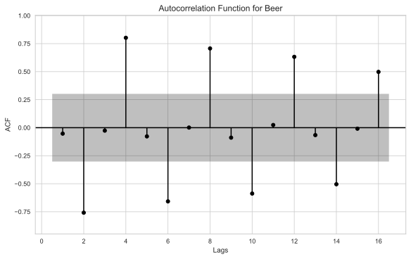Art by Allison Horst
Art by Allison Horst
Art by Allison Horst
Art by Allison Horst

Art by Allison Horst

Art by Allison Horst
Art by Allison Horst
Art by Allison Horst
Art by Allison Horst
Trend and seasonality in ACF plots
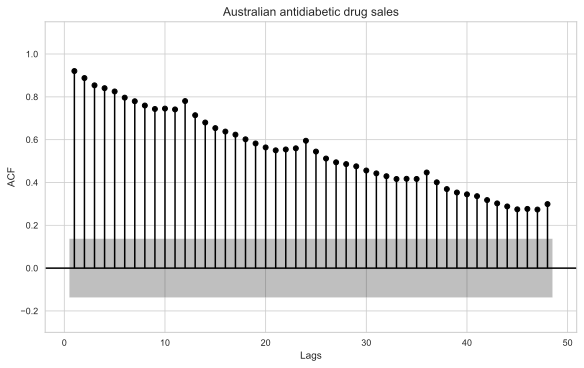Trend and seasonality in ACF plots
- When the data have trend, ACF for small lags tend to be large and positive.
- When data are seasonal, ACF tends to be large and positive at seasonal lags (e.g., 12, 24 for monthly data with yearly seasonality).
- When data are trended and seasonal, ACF tends to be large and positive at small lags and seasonal lags.
White noise
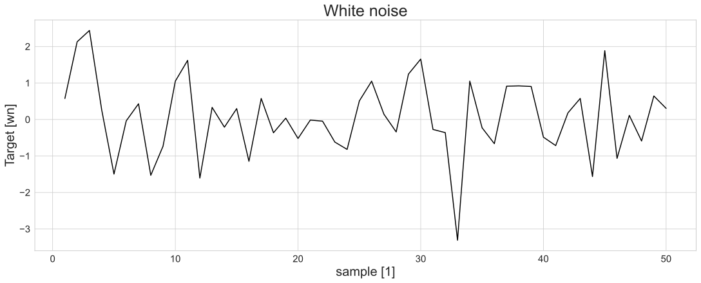White noise ACF
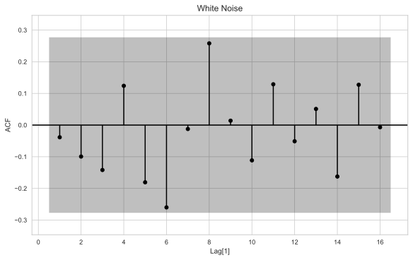CI for ACF
- Sampling distribution of \(r_k\) for white noise data is asymptotically \(N(0, 1/T)\).
- Approximate 95% confidence interval for \(r_k\) is
\[ \pm \frac{1.96}{\sqrt{T}} \]
where (T) is the length of the series.
Questions?